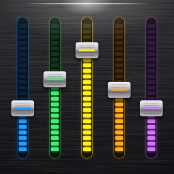
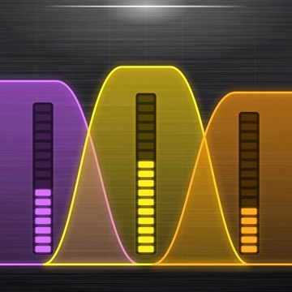

Live audio for iPhone and iPad
Built for the stage, not the studio.
Two dark, tight, hardware-style apps for people who run sound at live events, made to be read at a glance in a dark room.
Track Mixer
•
Mic Enhancer

For bands with backing tracksTrack Mixer
Leave the laptop at home. Run your backing tracks from an iPhone and a cheap USB interface, with a custom in-ear mix for every musician and a separate feed for front of house.

Live voice processingMic Enhancer
Turn an iPhone and a USB interface into a speech processor: high-pass and parametric EQ, a 3-band compressor, and a 31-band graphic EQ with a live analyser for ringing out a room.